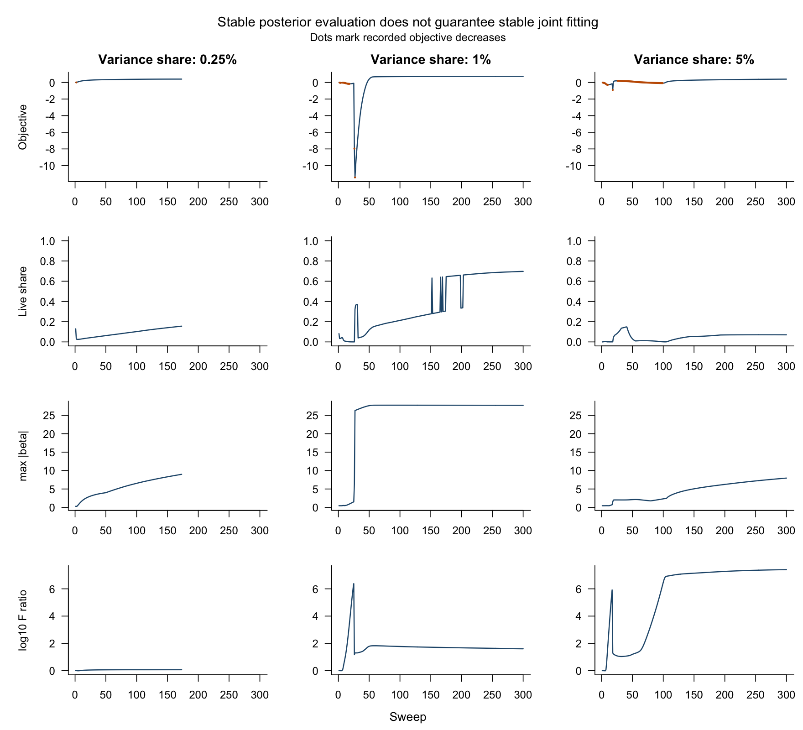

| Entry | Purpose | Incorporated | Date | Recommendation |
|---|---|---|---|---|
| 1 | Rank or initialization study | yes | 2026-07-13 | Archive candidate; retain until decision |
| 2 | Correctness audit | yes | 2026-10-30 | Archive candidate; retain until decision |
| 3 | Correctness audit | yes | 2026-10-30 | Archive candidate; retain until decision |
| 4 | Multimodal methods | yes | 2026-10-12 | Archive candidate; retain until decision |
| 5 | Multimodal methods | yes | 2026-09-17 | Archive candidate; retain until decision |
| 6 | Historical method or documentation work | yes | 2026-05-25 | Archive candidate; retain until decision |
| 7 | Rank or initialization study | yes | 2026-05-30 | Archive candidate; retain until decision |
| 8 | Historical method or documentation work | yes | 2026-10-15 | Archive candidate; retain until decision |
| 9 | Historical method or documentation work | yes | 2026-04-29 | Archive candidate; retain until decision |
| 10 | Historical method or documentation work | yes | 2026-10-30 | Archive candidate; retain until decision |
| 11 | Survival supervision | no | 2026-10-30 | Retain for review |
| 12 | Historical method or documentation work | yes | 2026-07-13 | Archive candidate; retain until decision |
| 13 | Historical method or documentation work | yes | 2026-06-16 | Archive candidate; retain until decision |
| 14 | Rank or initialization study | yes | 2026-10-15 | Archive candidate; retain until decision |
| 15 | Historical method or documentation work | yes | 2026-10-15 | Archive candidate; retain until decision |
| 16 | Historical method or documentation work | yes | 2026-10-15 | Archive candidate; retain until decision |
| 17 | Multimodal methods | yes | 2026-10-15 | Archive candidate; retain until decision |
| 18 | Historical method or documentation work | yes | 2026-10-15 | Archive candidate; retain until decision |
| 19 | Historical method or documentation work | yes | 2026-10-30 | Archive candidate; retain until decision |
| 20 | Historical method or documentation work | yes | 2026-05-05 | Archive candidate; retain until decision |
| 21 | Historical method or documentation work | yes | 2026-08-21 | Archive candidate; retain until decision |
| 22 | Historical method or documentation work | yes | 2026-08-27 | Archive candidate; retain until decision |
| 23 | Historical method or documentation work | yes | 2026-05-27 | Archive candidate; retain until decision |
| 24 | Historical method or documentation work | yes | 2026-06-14 | Archive candidate; retain until decision |
| 25 | Historical method or documentation work | yes | 2026-07-12 | Archive candidate; retain until decision |
| 26 | Historical method or documentation work | no | 2026-05-06 | Retain for review |
| 27 | Historical method or documentation work | no | 2026-05-06 | Retain for review |
| 28 | Historical method or documentation work | yes | 2026-07-13 | Archive candidate; retain until decision |
| 29 | Historical method or documentation work | yes | 2026-05-06 | Archive candidate; retain until decision |
| 30 | Rank or initialization study | yes | 2026-05-06 | Archive candidate; retain until decision |
| 31 | Historical method or documentation work | yes | 2026-05-20 | Archive candidate; retain until decision |
| 32 | Unified method reference | no | 2026-10-26 | Retain for review |
| 33 | Historical method or documentation work | yes | 2026-10-24 | Archive candidate; retain until decision |
| 34 | Historical method or documentation work | yes | 2026-07-15 | Archive candidate; retain until decision |
14 October 30, 2026
14.1 Takeaways
The known bookkeeping and preprocessing defects are repaired. The exact KL calculation, single logarithm and training-fixed comparator risk direction are checked. The final test suite passes 742 checks with 0 failures.
Balancing total loss does not guarantee meaningful loading supervision. The precision audit shows the per-gene contribution explicitly. The new implementation tests normalized projections, sparse nonnegative factors and a coefficient prior whose slab cannot disappear.
The registered supervision gate failed. Recovery, false survival activity and convergence are evaluated together, even when a loading resembles the planted program. Real-data model selection remains conditional on passing the simulation gate. No new external cohort was scored.
The existing comparator provides a recovery control. In the weakest large-feature cell it recovers the planted program in 10 datasets, with mean false-active count 1.000 and 10 converged fits. The corrected simulation permits recovery under that comparator.
14.2 Where the project stands
The expression benchmark remains a historical predictive result, rather than evidence that survival learned the expression factors. Earlier diagnostic work and a separate unified implementation repaired individual defects but did not establish recovery of a weak prognostic program. The current evaluation keeps the projection predictor η = (YF)β and tests that missing methodological claim directly. A latent predictor η = Lβ, scored in new patients by fitting activities with the loadings fixed, remains an unadopted fallback.
The local development inventory is retained in full. Nothing was deleted. It contains 34 entries, of which 30 are already incorporated into the primary implementation. The table uses anonymous inventory labels so the meeting narrative remains about methods rather than version-control names.
14.3 Issue tracker
The tracker merges duplicate issues across the algorithm specification, correctness review and derivation comparison. An implemented update is not considered a successful method until its decision test passes.
| Priority | Area | Issue | Diagnosis | Proposed solution | Status | Evidence |
|---|---|---|---|---|---|---|
| 1 | Survival supervision of F | Survival does not shape the gene loadings F; the fitted model behaves as matrix factorization followed by Cox. | Reconstruction precision sums over n×p entries and Cox over the events, so survival supplies 10^-6 to 10^-4 of the loading precision on real data. Weighting survival up to an equal share (about 10^4) breaks convergence in the current code. | Scale the Cox working weights by a balance factor γ and add the pieces that should keep a strongly weighted fit stable: damping, a non-collapsing β prior, a survival-informed start, sparse nonnegative priors. | implemented; corrected scientific gate failed; not adopted | Registered simulation summaries and gate tables |
| 1 | Survival supervision of F | The earlier survival term in the F update updated all genes at once and omitted the coupling between genes of the same program. | Every correlated gene regressed the full residual onto itself, overshooting the predictor and causing runaway feedback between L and F. | Gene-by-gene (Gauss–Seidel) update with the coupling term and the projection refreshed after each gene, with precision damping. | implemented and tested in opt-in fitter | Coupled sweep and independent posterior checks |
| 1 | Survival supervision of F | A low-variance prognostic program never gets a nonzero coefficient, so survival never pulls a factor toward it. | The survival gradient on F_k is multiplied by β_k. A start from the top SVD directions misses the program, so β_k ≈ 0 and the gradient is zero. | Hybrid start: K−2 factors from NMF/SVD plus two columns from the positive and negative parts of the univariate Cox score, then a short β warm-up. | implemented; disabled in unsupervised reference | Hybrid-start and unsupervised-reference tests |
| 1 | β prior | Survival coefficients collapse to exactly zero on real multimodal data and in some CV folds, and then stay there. | Both current β priors have an absorbing zero: the per-factor Normal variance estimate hits 0 when |x/s| ≤ 1, and the shared point-Laplace slab weight can hit 0 when only one of K factors is prognostic. | Point-normal prior on β with the slab proportion bounded to [1/K, 0.5] and a minimum slab scale. | implemented and tested; survival activity still requires validation | Null-prior and optimizer-fixture tests |
| 1 | KL bookkeeping | The ELBO counted the Gaussian log-normalizer of the L update once instead of once per patient. | A helper summed over the length of the precision vector, which is 1 for the L update. | Replicate the scalar precision before summing; test against the exact KL. | done: fixed and tested; the benchmark rerun shows unchanged external C and better convergence (5 of 5 CV folds, against 2 of 5) | Exact scalar/vector KL tests |
| 1 | Evaluation | Comparator scripts chose each cohort’s risk direction from validation outcomes (max(C, 1−C)). | This uses the outcome being evaluated and biases null C upward. | Fix the direction once from the training fit. | done: fixed; rescoring the saved risks changes none of the 20 comparator values | Training-fixed comparator rescore |
| 1 | Preprocessing | Three RNA-seq cohorts were log-transformed twice. | The cohort loader and the preprocessing step both applied log2(x+1). | Log once; test each cohort’s scale against its setting. | done: fixed and tested; external C unchanged (mean 0.625 vs 0.627) | Loader checks and saved benchmark rerun |
| 1 | Survival uncertainty | Large survival weights can make several unmatched factors appear prognostic. | Large likelihood weights increase conditional coefficient precision; mixed and survival-only directions may appear active without recovered expression programs. | Assess the registered false-active criterion; a different uncertainty model requires a new statistical decision. | registered false-active criterion failed; uncertainty/model decision open | Paired recovery and false-active tables |
| 1 | Numerical posterior stability | Extreme normal-means messages can lose posterior variance or yield inconsistent KL. | Subtracting large Gaussian terms causes cancellation; constrained coefficient optimization can fail at a boundary. | Cancel the Gaussian term analytically; verify moments and KL by quadrature; warn on a profile-likelihood fallback. | implemented and independently checked; isolated opt-in kernel | Saved pseudo-message fixtures and quadrature tests |
| 1 | Simulation design | Raw-risk and prepared reconstruction loadings differed in the original simulation. | SD division maps the reconstruction loading to F/SD while raw-expression risk maps to F×SD. | Generate Cox risk from normalized F/SD_train and retain that same direction in validation; preserve the original gate. | corrected and algebraically tested; complete corrected grid failed scientific gate | Shared-loading unit test and corrected-design saved grid |
| 1 | Program interpretation | A loading can predict survival after its reconstruction activity becomes exactly zero. | The projection uses observed expression rather than L; zero L does not remove F from the risk predictor. | Report survival-only columns explicitly; resolve joint-support or program-identification assumptions before another method change. | numerical scale identified; statistical decision open | Saved factor tables and survival-only scale-invariance tests |
| 2 | Convergence | Joint expression and methylation fits hit the sweep cap without converging. | Rescaling each factor by a data-dependent SD changes the next sweep’s precisions; the β prior is not carried through rescaling; KL values were cached out of sync with the prior. | Rescale L to unit RMS with the exact inverse map on F; normalize F inside the predictor so β never needs rescaling; compute KL directly from each ebnm result. | partly done: normalization and numerical repair; approximate objective may decrease | Saved objective and output-convergence traces |
| 2 | Multimodal balance | Methylation dominates expression, and adding CpGs destabilizes the fit (predictor SD in the tens of thousands at 25,000 CpGs). | Projection and precisions are unnormalized sums over features, so the block with more features dominates. | Weight each block by its feature count and scale each block’s projection by 1/(M√p_m); make log-space risk sets and a curvature floor the default. | open (after supervision works) | Earlier multimodal results; new work deferred |
| 2 | Model consistency | Single-block and multimodal models differ: z-scored data with nonnegative factors in one, intercepts and signed loadings in the other. | Z-scoring creates negative values that LF^T ≥ 0 cannot reconstruct; the multimodal model abandoned nonnegativity instead. | One model with M = 1 as the single-block case: divide each feature by its within-cohort SD without centering (Y ≥ 0), and center only inside the Cox projection. | implemented for the opt-in single-block model | Opt-in input scaling and projection tests |
| 2 | Evaluation | PACA-AU donors appear in two external series (47 shared donors plus one duplicate), so pooled intervals resample records rather than donors. | 568 unique donors across 616 records. | One record per donor in pooled analyses, donor-level or cohort-stratified bootstrap. | decision recorded; pooled reanalysis deferred | Preprocessing audit and recorded donor rule |
| 2 | Reproducibility | Four tests read baselines from a local branch and failed for anyone else. | The tests called git on a branch that is not pushed in that form. | Store the baselines as test fixtures. | done | Versioned baseline fixtures and full test suite |
| 2 | Writeup | The pre-registered supervision test (ΔC = −0.003, 95% CI −0.029 to 0.024) is not reported, and the summary leads with a comparison against a 40-factor two-step model instead of the matched K = 7 one. | Reporting lagged the analysis. | Report the null result; lead with the matched comparison (+0.011, −0.013 to 0.033); list every use of the external cohorts. | open (writeup revision) | Earlier registered null result and reporting dispositions |
| 2 | Sign convention | The single-block risk score may carry the opposite sign to the documented hazard convention. | A post-fit global flip based on training C can override the sign the partial likelihood chose. | Check the saved benchmark fit; fix or document the convention. | done: positive hazard direction; training-only reporting orientation documented | Hazard-orientation regression test |
| 2 | β uncertainty | Stored β variances may be zero where the derivation implies they are positive. | Historical saved variances are positive; extreme messages in the new engine exposed cancellation when subtracting large second moments. | Carry variances separately; evaluate same-prior posteriors and KL stably; retain second moments for updates. | implemented and tested; invalid earlier uncertainty states retained | Saved coefficient-variance audit and strong-message regression tests |
| 3 | Rank and pruning | Exponential priors without a point mass at zero never prune; post-hoc deletion either deletes nothing (multimodal) or rotates the prognostic program away (single block). | Exponential priors have no mass at zero. Deleting a factor while holding the rest frozen is dominated by the reconstruction term; refitting at K−1 lets the protected program absorb the deleted variance. | Point-exponential priors on L and F; no deletion refits; report survival-active, genomics-only and inactive factors from the fitted K; choose K and the supervision strength by training CV with the one-SE rule. | partly done: no deletion refits and post-fit roles; rank selection deferred | Saved factor classifications; no deletion refits |
| 3 | Feature selection | Dense projections dilute the survival signal at large p; survival pre-screening undercuts the method’s claim. | Projecting thousands of background genes adds noise; screening on survival first means the factorization no longer discovers the prognostic program. | Keep the unsupervised mean/variance screen as primary; survival screening only as an ablation; report a feature-count sensitivity curve. | open | Approved preprocessing decisions |
| 3 | Cohorts | Pooling cohorts without per-cohort scaling collapses β; a cohort indicator column in L lowers external C. | Unscaled pooling makes the top factor a between-cohort technical difference; the indicator wastes a factor. | Scale within cohort; no indicator column; stratified Cox risk sets and per-cohort residual precisions where needed. | adopted in the current pipeline | Existing cohort diagnostics and approved defaults |
| 3 | Paper readiness | Missing comparators and a writeup with hand-typed numbers. | Comparators deferred; writeup has no executed code. | Add PurIST as a prognostic comparator, DeSurv head to head, elastic-net Cox and clinical covariates; compute every number and figure from saved results. | open | Writeup dispositions and deferred comparator list |
| 3 | Platform | One test collapses to an all-zero fit on Linux with reference BLAS. | An all-zero ebnm return looks converged. | Not pursued, since all work runs locally; the new fitter must flag an all-zero fit as a failure. | deferred (known platform risk) | Known platform risk; explicit degenerate-fit checks |
14.4 Cleanup results
The KL helper previously counted a shared Gaussian normalizer only once instead of once per patient. Exact-value tests now cover both scalar and vector precisions. The RNA-seq preprocessing previously logged some cohorts twice; each cohort is now logged once. The earlier benchmark rerun after these fixes is reproduced below from its saved results, without another external evaluation.
| Cohort | n | Frozen | Refit with old transform | Refit with single log |
|---|---|---|---|---|
| Dijk | 90 | 0.634 | 0.634 | 0.630 |
| Moffitt_GEO_array | 123 | 0.549 | 0.549 | 0.540 |
| PACA_AU_array | 63 | 0.648 | 0.648 | 0.645 |
| PACA_AU_seq | 52 | 0.657 | 0.657 | 0.664 |
| Puleo_array | 288 | 0.645 | 0.645 | 0.645 |
Mean external C is 0.627 in the frozen benchmark and 0.625 in the single-log rerun. With single logging, the corrected stopping calculation gives 5 converged training folds versus 2 before correction. Mean training-CV C is 0.640 with SE 0.017.
Comparator scoring now fixes orientation from training data. Rescoring saved risks changed 0 of 20 comparator values. Positive η denotes higher hazard. A training-concordance sign correction is a reporting convention rather than a further likelihood optimization, and is frozen for held-out patients. All 7 stored coefficient variances in the saved single-log fit are positive; their minimum is 8.6e-12. An estimated prior can still collapse with weak evidence, which is a different issue from incorrectly storing a posterior second moment.
14.5 Precision balance and the revised fitter
Reconstruction precision for gene j in factor k is \(A_{R,jk}=\tau_j\sum_i E[L_{ik}^2]\). Survival precision is \(A_{S,jk}=\gamma E[\beta_k^2]s_k^2\sum_i w_i\tilde Y_{ij}^2\). Their ratio determines whether survival can move a loading. A feature/event weight alone does not control that ratio.
This is a conditional audit at the transformed saved training state, using its stored residual precision. It is not a new fit under the proposed input scale. It uses 273 patients, 2218 genes and 139 events. The single-log gene screen changes the retained feature set, so the audit reports its actual dimensions.
| Factor | Weight | Median survival share | Weight for one-tenth share | Weight for equal precision |
|---|---|---|---|---|
| 1 | 15.957 | 7.8e-05 | 2.3e+04 | 2.0e+05 |
| 2 | 15.957 | 5.0e-12 | 3.5e+11 | 3.2e+12 |
| 3 | 15.957 | 3.0e-11 | 6.0e+10 | 5.4e+11 |
| 4 | 15.957 | 5.8e-08 | 3.1e+07 | 2.7e+08 |
| 5 | 15.957 | 3.4e-12 | 5.3e+11 | 4.8e+12 |
| 6 | 15.957 | 5.4e-12 | 3.3e+11 | 3.0e+12 |
| 7 | 15.957 | 1.0e-03 | 1.8e+03 | 1.6e+04 |
The new fitter divides nonnegative expression by within-cohort SD and centers only inside the projection. Patient activities and gene loadings have point-exponential priors. The projection uses normalized loading columns, while activity RMS normalization is applied at sweep boundaries. Coefficients and their prior remain in the same projection units under this rescaling.
A hybrid start uses nonnegative reconstruction directions plus the positive and negative Cox-score directions. The unsupervised reference disables that survival-informed start. Coefficient updates use a bounded point-normal prior. The gene-wise update includes within-program coupling and refreshes the projection after each gene. Survival messages are damped before computing the posterior. KL is computed using the same normal-means messages and fitted prior, without a later replacement of the prior or a deletion refit. Small variances are stored directly rather than recovered by subtracting large second moments. Predictor and reconstruction uncertainty are sums of nonnegative variance contributions.
DeSurv uses a different balance: reconstruction divided by squared data norm, event-normalized Cox loss, gradient-norm matching, bounded multiplicative updates and backtracking against its actual loss. These operations help explain why its stability does not establish stability of the proposed variational updates.
14.6 Registered simulation and failures
The design uses 10 paired datasets per cell, with feature counts 50 and 2000 and planted centered variance shares 0.25, 1, 5 percent. The arms are an unsupervised factorization followed by Cox, the share-calibrated supervision grid, the existing canonical fitter and a training-CV Cox lasso. Each training dataset contains 400 patients and its synthetic validation cohort contains 120; the initial rank is 7, with at most 300 sweeps. Synthetic validation is independent of training. No real validation cohort is used for any choice.
The gate requires the same supervision-grid arm to improve recovery by the registered 3 datasets out of 10 in at least 2 variance cells, with mean false-active count at most 1 and at least 9 converged fits per qualifying cell. Recovery requires a loading match, correct coefficient direction and posterior survival activity together. Errors and missing checkpoints stay in the denominator. Failed factor fits receive the conservative false-active penalty specified before execution.
| attempt | expected | saved | missing | errors | nonconverged | undefined_C | gate_passed |
|---|---|---|---|---|---|---|---|
| attempt1 | 360 | 80 | 280 | 284 | 285 | 284 | FALSE |
| attempt2 | 360 | 360 | 0 | 149 | 161 | 149 | FALSE |
| attempt3 | 360 | 360 | 0 | 155 | 161 | 0 | FALSE |
| attempt4 | 360 | 360 | 0 | 53 | 140 | 0 | FALSE |
| attempt5 | 360 | 90 | 270 | 274 | 293 | 270 | FALSE |
| attempt6 | 360 | 360 | 0 | 0 | 129 | 0 | FALSE |
| attempt7 | 360 | 360 | 0 | 0 | 153 | 0 | FALSE |
The first attempt could not calibrate most supervised arms because dead columns have zero reconstruction precision. The next attempt excluded dead columns, but exposed posterior numerical failures. The corrected comparison also removes survival-score initialization from the unsupervised reference. An intermediate attempt rescales normal-means problems, checks both posterior moments, reduces damping and returns the last coherent fit with a failure reason whenever a numerical calculation fails. An exponential-posterior repair keeps the same fitted prior but cancels the common Gaussian term before evaluating its moments and KL. Independent numerical integration verifies that calculation. A constrained profile- likelihood fallback repairs a reproduced coefficient-prior optimizer failure and emits a saved warning. A later boundary correction normalizes tiny positive activities and fixes the otherwise free loading scale when an activity vanishes. A separate variance audit then found that coefficient uncertainty could disappear through second-moment subtraction. That invalid run was stopped with all checkpoints retained. The final attempt carries each variance separately and uses stable same-prior posterior/KL calculations throughout. No prior or likelihood weight was changed by these numerical corrections. A subsequent design audit found that the generated survival direction used raw-expression units while the reconstruction loading used SD-divided units. The earlier grids therefore serve as numerical diagnostics and do not test recovery of one shared loading. The corrected grid generates survival from the unit-normalized prepared reconstruction loading and holds that training direction fixed in synthetic validation. An algebraic test verifies this identity. The coefficient now has prepared-projection units, so predictive strength is not comparable across attempts. The original gate is retained.
An independently integrated synthetic pseudo-message demonstrates the numerical failure. Its pseudo-observation is 9.2e+08 with SE 3.1e+06 at sweep 46. Quadrature gives posterior variance 8.539. The returned normal-means second moment is 2.699, versus 11.238 from integration. The earlier compiled result is close to the latter but also has some cancellation error. Substituting either result silently would conceal a numerical problem.
| rho | converged | recovered | false_active | sweeps | error |
|---|---|---|---|---|---|
| 2e-01 | FALSE | TRUE | 5 | 45 | Sequential posterior mismatch |
| 2e-02 | FALSE | TRUE | 4 | 19 | Bounded β marginal likelihood did not converge |
| 2e-03 | FALSE | TRUE | 4 | 13 | Invalid ebnm posterior or KL |
| 2e-04 | FALSE | TRUE | 4 | 8 | Invalid ebnm posterior or KL |
Reducing damping alone did not repair the diagnosed example before the stable posterior evaluation. These exploratory reproductions diagnose numerical behavior; they are not additional successful gate datasets. The objective is a diagonal-Taylor approximation with a sweep-fixed projection normalizer. Decreases are explicitly reported, rather than described as guaranteed coordinate ascent.
The variance cells refer to raw centered expression. SD division changes the relative signal variance; the corresponding prepared variance shares and oracle discrimination are reported below from the generated datasets.
| p | variance | raw_share | prepared_share | training_eta_sd | oracle_C |
|---|---|---|---|---|---|
| 50 | 0.0025 | 0.0025 | 0.0048163 | 3.537793 | 0.9038223 |
| 2000 | 0.0025 | 0.0025 | 0.0041173 | 9.926779 | 0.9612543 |
| 50 | 0.0100 | 0.0100 | 0.0144764 | 3.958697 | 0.9108130 |
| 2000 | 0.0100 | 0.0100 | 0.0122069 | 16.478828 | 0.9770178 |
| 50 | 0.0500 | 0.0500 | 0.0374920 | 5.018316 | 0.9197835 |
| 2000 | 0.0500 | 0.0500 | 0.0327916 | 26.747892 | 0.9864163 |
Matched-factor precision shares below refer to the experimental engine at its saved final state; inactive columns have undefined shares.
| Genes | Variance percent | Arm | N | Recovered | Converged | Mean false active | Mean validation C | C denominator | Undefined C | Errors | Final matched precision share |
|---|---|---|---|---|---|---|---|---|---|---|---|
| 50 | 0.25 | Unsupervised then Cox | 10 | 0 | 10 | 1.4 | 0.645 | 10 | 0 | 0 | 0.0e+00 |
| 50 | 0.25 | Lower share grid | 10 | 6 | 7 | 5.3 | 0.881 | 7 | 0 | 0 | 9.4e-01 |
| 50 | 0.25 | Middle share grid | 10 | 3 | 3 | 6.1 | 0.879 | 3 | 0 | 0 | 4.4e-01 |
| 50 | 0.25 | Higher share grid | 10 | 1 | 1 | 6.7 | 0.879 | 1 | 0 | 0 | 5.0e-01 |
| 50 | 0.25 | Existing canonical fitter | 10 | 8 | 9 | 1.5 | 0.852 | 9 | 0 | 0 | NA |
| 50 | 0.25 | Cox lasso | 10 | 10 | 10 | NA | 0.899 | 10 | 0 | 0 | NA |
| 50 | 1.00 | Unsupervised then Cox | 10 | 0 | 10 | 1.4 | 0.657 | 10 | 0 | 0 | 0.0e+00 |
| 50 | 1.00 | Lower share grid | 10 | 3 | 3 | 6.1 | 0.879 | 3 | 0 | 0 | 6.1e-01 |
| 50 | 1.00 | Middle share grid | 10 | 3 | 3 | 6.6 | 0.890 | 3 | 0 | 0 | 6.5e-01 |
| 50 | 1.00 | Higher share grid | 10 | 2 | 2 | 6.8 | 0.883 | 2 | 0 | 0 | 8.1e-01 |
| 50 | 1.00 | Existing canonical fitter | 10 | 6 | 6 | 3.7 | 0.895 | 6 | 0 | 0 | NA |
| 50 | 1.00 | Cox lasso | 10 | 10 | 10 | NA | 0.906 | 10 | 0 | 0 | NA |
| 50 | 5.00 | Unsupervised then Cox | 10 | 0 | 10 | 1.8 | 0.681 | 10 | 0 | 0 | 0.0e+00 |
| 50 | 5.00 | Lower share grid | 10 | 7 | 7 | 5.4 | 0.911 | 7 | 0 | 0 | 7.1e-01 |
| 50 | 5.00 | Middle share grid | 10 | 2 | 2 | 6.6 | 0.904 | 2 | 0 | 0 | 7.4e-01 |
| 50 | 5.00 | Higher share grid | 10 | 2 | 2 | 6.6 | 0.905 | 2 | 0 | 0 | 8.9e-01 |
| 50 | 5.00 | Existing canonical fitter | 10 | 7 | 7 | 2.9 | 0.904 | 7 | 0 | 0 | NA |
| 50 | 5.00 | Cox lasso | 10 | 10 | 10 | NA | 0.917 | 10 | 0 | 0 | NA |
| 2000 | 0.25 | Unsupervised then Cox | 10 | 0 | 10 | 1.6 | 0.687 | 10 | 0 | 0 | 0.0e+00 |
| 2000 | 0.25 | Lower share grid | 10 | 0 | 2 | 6.8 | 0.460 | 2 | 0 | 0 | 2.6e-01 |
| 2000 | 0.25 | Middle share grid | 10 | 0 | 0 | 7.0 | NA | 0 | 0 | 0 | 8.2e-01 |
| 2000 | 0.25 | Higher share grid | 10 | 0 | 0 | 7.0 | NA | 0 | 0 | 0 | 1.0e+00 |
| 2000 | 0.25 | Existing canonical fitter | 10 | 10 | 10 | 1.0 | 0.905 | 10 | 0 | 0 | NA |
| 2000 | 0.25 | Cox lasso | 10 | 9 | 10 | NA | 0.899 | 10 | 0 | 0 | NA |
| 2000 | 1.00 | Unsupervised then Cox | 10 | 0 | 10 | 1.3 | 0.745 | 10 | 0 | 0 | 0.0e+00 |
| 2000 | 1.00 | Lower share grid | 10 | 0 | 1 | 6.8 | 0.859 | 1 | 0 | 0 | 8.0e-01 |
| 2000 | 1.00 | Middle share grid | 10 | 0 | 0 | 7.0 | NA | 0 | 0 | 0 | 6.6e-01 |
| 2000 | 1.00 | Higher share grid | 10 | 0 | 0 | 7.0 | NA | 0 | 0 | 0 | 8.3e-01 |
| 2000 | 1.00 | Existing canonical fitter | 10 | 10 | 10 | 1.5 | 0.953 | 10 | 0 | 0 | NA |
| 2000 | 1.00 | Cox lasso | 10 | 5 | 10 | NA | 0.942 | 10 | 0 | 0 | NA |
| 2000 | 5.00 | Unsupervised then Cox | 10 | 1 | 10 | 1.1 | 0.832 | 10 | 0 | 0 | 0.0e+00 |
| 2000 | 5.00 | Lower share grid | 10 | 0 | 1 | 7.0 | 0.815 | 1 | 0 | 0 | 3.0e-01 |
| 2000 | 5.00 | Middle share grid | 10 | 0 | 1 | 6.8 | 0.737 | 1 | 0 | 0 | 4.9e-01 |
| 2000 | 5.00 | Higher share grid | 10 | 0 | 0 | 7.0 | NA | 0 | 0 | 0 | 8.7e-01 |
| 2000 | 5.00 | Existing canonical fitter | 10 | 10 | 10 | 1.1 | 0.909 | 10 | 0 | 0 | NA |
| 2000 | 5.00 | Cox lasso | 10 | 0 | 10 | NA | 0.965 | 10 | 0 | 0 | NA |
| variance | arm | recovered | baseline_recovered | recovery_gain | mean_false | converged | qualifies |
|---|---|---|---|---|---|---|---|
| 0.0025 | share0.05 | 0 | 0 | 0 | 6.8 | 2 | FALSE |
| 0.0100 | share0.05 | 0 | 0 | 0 | 6.8 | 1 | FALSE |
| 0.0500 | share0.05 | 0 | 1 | -1 | 7.0 | 1 | FALSE |
| 0.0025 | share0.2 | 0 | 0 | 0 | 7.0 | 0 | FALSE |
| 0.0100 | share0.2 | 0 | 0 | 0 | 7.0 | 0 | FALSE |
| 0.0500 | share0.2 | 0 | 1 | -1 | 6.8 | 1 | FALSE |
| 0.0025 | share0.5 | 0 | 0 | 0 | 7.0 | 0 | FALSE |
| 0.0100 | share0.5 | 0 | 0 | 0 | 7.0 | 0 | FALSE |
| 0.0500 | share0.5 | 0 | 1 | -1 | 7.0 | 0 | FALSE |
| arm | qualifying_cells | passed |
|---|---|---|
| share0.05 | 0 | FALSE |
| share0.2 | 0 | FALSE |
| share0.5 | 0 | FALSE |
The unsupervised reference records reconstruction convergence and then uses a fixed coefficient-update stage. Its flag does not separately establish Cox convergence. The supervision-grid flags require joint objective and output stopping. This distinction leaves the failed gate unchanged: the grid arms exceed the false-active budget and fail their own convergence requirements.
Reported C means use converged fits with valid stored uncertainty; their denominators are shown explicitly. Failed states and undefined scores remain in the failure inventory.
A loading-recovery result alone does not establish calibrated survival inference or stable joint fitting. The gate keeps those requirements together. No real-data training CV or post-pass ablation is justified by a failed gate. Survival-only loading directions are reported separately: their activities are zero, so they predict outcome without reconstructing an expression program. Their numerical scale is identified, but their scientific interpretation is an unresolved model question.
The final diagnostic replays use saved weights and exactly reproduce their registered loading means; they are not additional gate datasets. Their coefficient and loading variances are carried separately, avoiding loss from subtracting large second moments.
| variance | recovered | false_active | converged | decreases | share_final_live | largest_mean_difference | first_decrease |
|---|---|---|---|---|---|---|---|
| 0.0025 | FALSE | 6 | TRUE | 1 | 0.1557397 | 0 | 2 |
| 0.0100 | FALSE | 4 | FALSE | 17 | 0.6972988 | 0 | 2 |
| 0.0500 | TRUE | 4 | FALSE | 84 | 0.0681239 | 0 | 2 |
| variance | mean_reconstruction_loss | expected_reconstruction_loss | F_norm_ratio | L_norm_ratio | median_tau | min_tau | max_gene_relative_loss | max_loading_energy_fraction | max_beta |
|---|---|---|---|---|---|---|---|---|---|
| 0.0025 | 1.026870e-01 | 1.031430e-01 | 1.167295e+00 | 1.155069 | 1.000262 | 0.0055456 | 1.531056e+01 | 0.0148815 | 8.981310 |
| 0.0100 | 9.390241e+02 | 9.391062e+02 | 3.993305e+01 | 1.148109 | 1.001862 | 0.0000000 | 1.785168e+06 | 0.9990742 | 27.706546 |
| 0.0500 | 4.531055e+14 | 4.538032e+14 | 2.567138e+07 | 1.291070 | 1.002433 | 0.0000000 | 1.334497e+18 | 1.0000000 | 7.955664 |
| variance | gamma | rho | max_projection_correlation | min_beta_sd | max_abs_z | live_projection_columns |
|---|---|---|---|---|---|---|
| 0.0025 | 62233.06 | 0.02 | 0.8352935 | 0.0000000 | 24699.49 | 6 |
| 0.0100 | 44480.78 | 0.02 | 0.7338726 | 0.0001616 | 171466.96 | 4 |
| 0.0500 | 34794.36 | 0.02 | 1.0000000 | 0.0000376 | 25295.58 | 5 |
| variance | largest_F_jump_sweep | F_jump_ratio | largest_beta_increase_sweep | largest_objective_drop_sweep | largest_objective_drop |
|---|---|---|---|---|---|
| 0.0025 | 9 | 1.012681 | 6 | 2 | -65787.15 |
| 0.0100 | 20 | 2.810167 | 27 | 26 | -386033041.96 |
| 0.0500 | 10 | 4.566959 | 18 | 18 | -26744508.95 |
| variance | orphan |
|---|---|
| 0.0025 | 2 |
| 0.0100 | 0 |
| 0.0500 | 0 |
The fixed cases reach a maximum expected reconstruction-loss ratio of 4.5e+14 and a minimum residual precision of 8.7e-20. Estimated noise variances sharply downweight the affected features. Finite posterior moments therefore do not establish stable joint fitting or a faithful expression reconstruction. The jump table identifies the largest observed end-of-sweep changes; it does not attribute the first loss to a particular within-sweep block. Changing the noise model or the normalized objective requires a stated methodological decision.

14.7 Preprocessing decisions
| item | step | decision | status |
|---|---|---|---|
| 1 | RNA-seq transform | One logarithm per cohort | Implemented |
| 2 | TCGA expression source | Retain the benchmark RSEM source | Recorded for pipeline alignment |
| 3 | Expression scale | Within-cohort SD division without centering; projection centered | Implemented in opt-in fitter |
| 4 | Validation scale | Each validation cohort uses its own feature SD | Recorded; no new external evaluation |
| 5 | Gene screen | Training-only names; top-3000 combined mean/variance rank per cohort with intersection | Retained; survival screen only an ablation |
| 6 | Missing validation genes | Intersect genes and remove matching loading rows | Retain existing rule |
| 7 | Duplicate symbols | First occurrence in wrapper; earlier median collapse in some loaders remains to align | Recorded with loader exception |
| 8 | Methylation scale | Keep beta-values; defer M-values | Recorded |
| 9 | Methylation imputation | Within-cohort KNN; 50 primary donors versus 67 donors in imputation pool | Recorded |
| 10 | Probe QC | Cross-reactive and SNP filters when multimodal work resumes | Deferred |
| 11 | Pooled external inference | One record per donor; 568 unique donors; donor-level or cohort-stratified resampling | Recorded; no new pooled analysis |
The approved preprocessing decisions are recorded separately from completed pipeline changes. Single logging is adopted. The existing benchmark TCGA expression source is retained. Training-only gene names and the per-cohort mean/variance screen with intersection remain primary; survival pre-screening is reserved for an ablation.
For the new fitter, within-cohort division by SD preserves nonnegative expression and centering occurs only in the projection. Validation uses its own within-cohort SD, so scoring requires a cohort-level distribution rather than a frozen transformation for a single new patient. Missing validation genes follow the existing intersection rule with matching loading rows removed. The wrapper retains the first duplicate symbol; the earlier median collapse inside some cohort loaders remains a documented inconsistency to resolve when those loaders are next changed.
Methylation remains on the β-value scale with within-cohort KNN imputation. The primary validation set and the larger donor pool used for imputation must be distinguished. Cross-reactive and SNP probe filters are required when multimodal work resumes. Pooled external analyses must use unique donors with donor-level or cohort-stratified resampling. These decisions do not authorize another external analysis.
14.8 How the model changed since the March derivation
The original latent predictor η = Lβ put survival directly in the activity update. The later projection predictor η = (YF)β permits direct scoring of new patients, but survival can affect the factorization only through the loading update. The new experimental implementation makes that term explicit, normalizes the projection, changes prior estimation and monitors the full approximate objective. These changes are recorded in the decision log. The projection formulation remains under evaluation; the latent formulation has not been adopted as a replacement.
14.9 Open questions
- Should the projection model be rederived with a consistently normalized objective and an acceptance rule, before further fitting experiments?
- If the gate remains unmet, should the next registered study use a latent predictor with fold-in prediction, or first derive a coherent projection objective?
- How should uncertainty be reported under a strongly tempered Cox likelihood, given that conditional posterior activity can increase without stable recovery or improved prediction?
- Should factors be allowed to predict survival after their reconstruction activity becomes exactly zero, and what then defines an expression program?
- Which external cohort should remain unused for the final claim after the methodology is fixed?